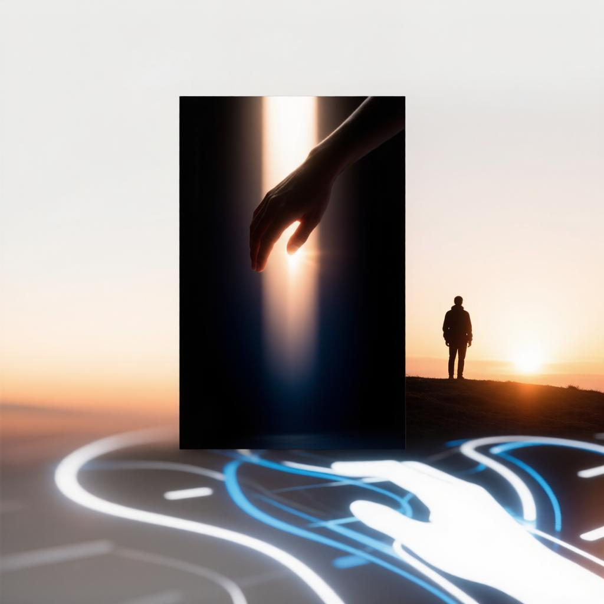
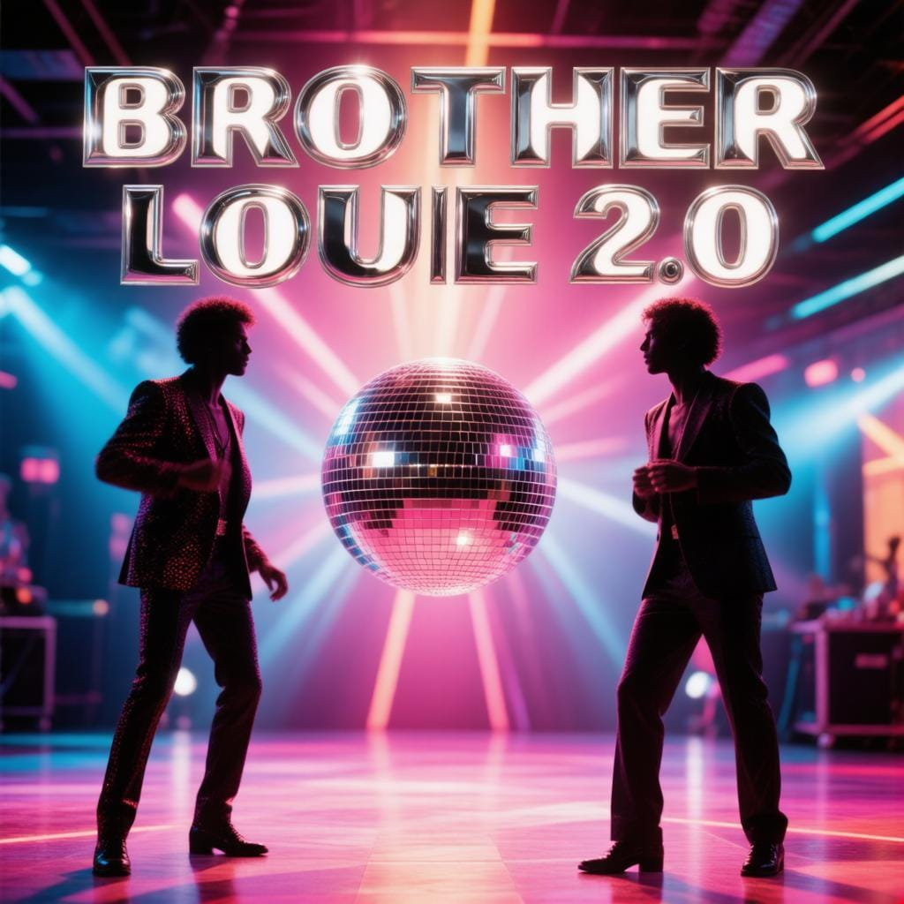

Тёплый свет
Уютный акустический альбом о теплых моментах и светлой грусти. Включает бонус-альбом «После дождя».

Modern Talking
Неоновый ретро-хит. Энергия 80-х, яркие синтезаторы и танцпол до утра.
Мираж
Ночной фиолетовый синтвейв. Архивные треки, окутанные тайной и неоновым светом.

Минута тепла
Тёплый кофейный уют. История от драмы и расставания к тихому счастью и прощению.
Из раннего (2CD)
Концептуальный двойной сборник. Драма и принятие в первом томе, любовь и надежда — во втором.

Тихое счастье
Акустика и лоу-фай уют. О простых вещах, теплых звонках и умении замечать счастье в моменте.
Точка опоры
Светлый и мотивирующий альбом. Глоток свежего воздуха для тех, кто ищет поддержку и веру в себя.